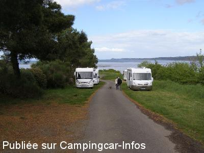

AS = Aire de services uniquement de :
HILLION Lermot
(N° 584)
Accès/adresse :
Rue de Trégot
Lermot Plage
22120 HILLION
Lermot Plage
22120 HILLION
Latitude : (Nord) 48.53037° Décimaux ou 48° 31′ 49′′
Longitude : (Ouest) -2.66449° Décimaux ou -2° 39′ 52′′
Tarif : Gratuit
Type de borne : Artisanale
Services :


Autres informations :
Aire ouverte toute l'année
non éclairée
La dalle de vidange est devant les WC publics.
Tél : +33 (0)296 322 104

Le 12/05/2015 par Tof
Le 09/08/2013 par Herbert Pelzer
Le 09/09/2012 par nan49
de
Tof
le 12/05/2015 :
Effectivement pas evident à trouver mais c'est un regal.
Pour l'eau robinet lisse, vidange ok.
Effectivement pas evident à trouver mais c'est un regal.
Pour l'eau robinet lisse, vidange ok.
de
Sylvéric
le 27/04/2014 :
Pas facile à trouver mais on y arrive! Ensuite, il faut apercevoir le panneau du parking au bout de la route qui descend à la mer puis à gauche. Parking sur herbe un peu pentu, mais vue magnifique du haut de ces falaises. Passage du GR 34 (sentier des douaniers) avec proposition d'une boucle passant par la Maison de la baie.
Pas facile à trouver mais on y arrive! Ensuite, il faut apercevoir le panneau du parking au bout de la route qui descend à la mer puis à gauche. Parking sur herbe un peu pentu, mais vue magnifique du haut de ces falaises. Passage du GR 34 (sentier des douaniers) avec proposition d'une boucle passant par la Maison de la baie.
de
nan49
le 09/09/2012 :
le 2/09/2012 nous avons passé une nuit sur l'aire qui n'est plus comme sur la photo du 03/06/2009 (voir nouvelles photos), des barres en hauteur interdissent maintenant l'accès mais un peu plus loin sur la gauche il y a un petit chemin en pente où il est possible de stationner. Services toujours en arrivant à droite près des toilettes.
le 2/09/2012 nous avons passé une nuit sur l'aire qui n'est plus comme sur la photo du 03/06/2009 (voir nouvelles photos), des barres en hauteur interdissent maintenant l'accès mais un peu plus loin sur la gauche il y a un petit chemin en pente où il est possible de stationner. Services toujours en arrivant à droite près des toilettes.
de
Debarre
le 11/10/2011 :
Bravo pour ce paysage de bord de mer ,calme et tranquille.Un sentier pédestre passe à côté.
Un peu difficile à trouver
Bravo pour ce paysage de bord de mer ,calme et tranquille.Un sentier pédestre passe à côté.
Un peu difficile à trouver
de
Christine
le 01/08/2010 :
Merci à la commune pour cet emplacement, c'est notre deuxième visite. Calme et vue, une vidange a été aménagée à droite en arrivant. Le stationnement est au parking en haut à gauche, la police municipale passe tous les jours, très gentille, d'ailleurs. De belles balades et moules à volonté. Encore bravo pour cet endroit réservé.
Merci à la commune pour cet emplacement, c'est notre deuxième visite. Calme et vue, une vidange a été aménagée à droite en arrivant. Le stationnement est au parking en haut à gauche, la police municipale passe tous les jours, très gentille, d'ailleurs. De belles balades et moules à volonté. Encore bravo pour cet endroit réservé.
de
FLAMENT. Michel
le 26/11/2009 :
J'ai séjourné 3 jours à Hillion. Il faut continuer vers la plage de Lermot, là nous sommes maintenant autorisés à stationner c'est reconnu comme aire de camping-cars. Il y a des WC publics dans la descente, à droite, près du plus faire le plein d'eau. Endroit calme et jolie vue sur la mer. Tant qu'à l'aire propre de Hillion, à coté des gens du voyage, il n'y avait pas d'eau mais bien des poubelles. Félicitation pour l'endroit.
J'ai séjourné 3 jours à Hillion. Il faut continuer vers la plage de Lermot, là nous sommes maintenant autorisés à stationner c'est reconnu comme aire de camping-cars. Il y a des WC publics dans la descente, à droite, près du plus faire le plein d'eau. Endroit calme et jolie vue sur la mer. Tant qu'à l'aire propre de Hillion, à coté des gens du voyage, il n'y avait pas d'eau mais bien des poubelles. Félicitation pour l'endroit.
de
milinawel2
le 22/06/2009 :
Une nouvelle zone de stationnement avec vidange est ouverte aux CC, à la sortie d'Hillion en direction de la plage de Lermot, après la superette à gauche: coordonnées N48°31'02.48" O2°40'06.60".
7 places matérialisées au sol. Parking tout neuf réalisée devant l'entrée du terrain d'accueil des gens du voyage.
Une nouvelle zone de stationnement avec vidange est ouverte aux CC, à la sortie d'Hillion en direction de la plage de Lermot, après la superette à gauche: coordonnées N48°31'02.48" O2°40'06.60".
7 places matérialisées au sol. Parking tout neuf réalisée devant l'entrée du terrain d'accueil des gens du voyage.
de
milinawel2
le 03/06/2009 :
Camping-caristes, une nouvelle zone de stationnement avec vidange mais sans eau au lieu-dit "la Plage de l'Hermot", à 1 km environ du bourg d'Hillion. Coordonnées : N 48°31'49.94" et O 2°39'52.56". Il est conseillé d'utiliser les services payants du camping Bellevue situé en direction de la "Pointe de Guettes" N 48°31'58.38" et O 2°40'19.73".
J'ai passé 2 nuits ce week-end à la plage de l'Hermot. La zone de stationnement avec verdure est bien entretenue, une belle vue mais une plage impraticable du fait de la présence d'algues vertes en décomposition. Thalassa en avait parlé dernièrement. En fait, c'est un ancien parking de voitures, déserté en partie du fait des algues vertes depuis de nombreuses années, qui est mis à la disposition des CC. Départs de randos par le chemin du douanier et observation des oiseaux possibles sur cette côte.
Camping-caristes, une nouvelle zone de stationnement avec vidange mais sans eau au lieu-dit "la Plage de l'Hermot", à 1 km environ du bourg d'Hillion. Coordonnées : N 48°31'49.94" et O 2°39'52.56". Il est conseillé d'utiliser les services payants du camping Bellevue situé en direction de la "Pointe de Guettes" N 48°31'58.38" et O 2°40'19.73".
J'ai passé 2 nuits ce week-end à la plage de l'Hermot. La zone de stationnement avec verdure est bien entretenue, une belle vue mais une plage impraticable du fait de la présence d'algues vertes en décomposition. Thalassa en avait parlé dernièrement. En fait, c'est un ancien parking de voitures, déserté en partie du fait des algues vertes depuis de nombreuses années, qui est mis à la disposition des CC. Départs de randos par le chemin du douanier et observation des oiseaux possibles sur cette côte.